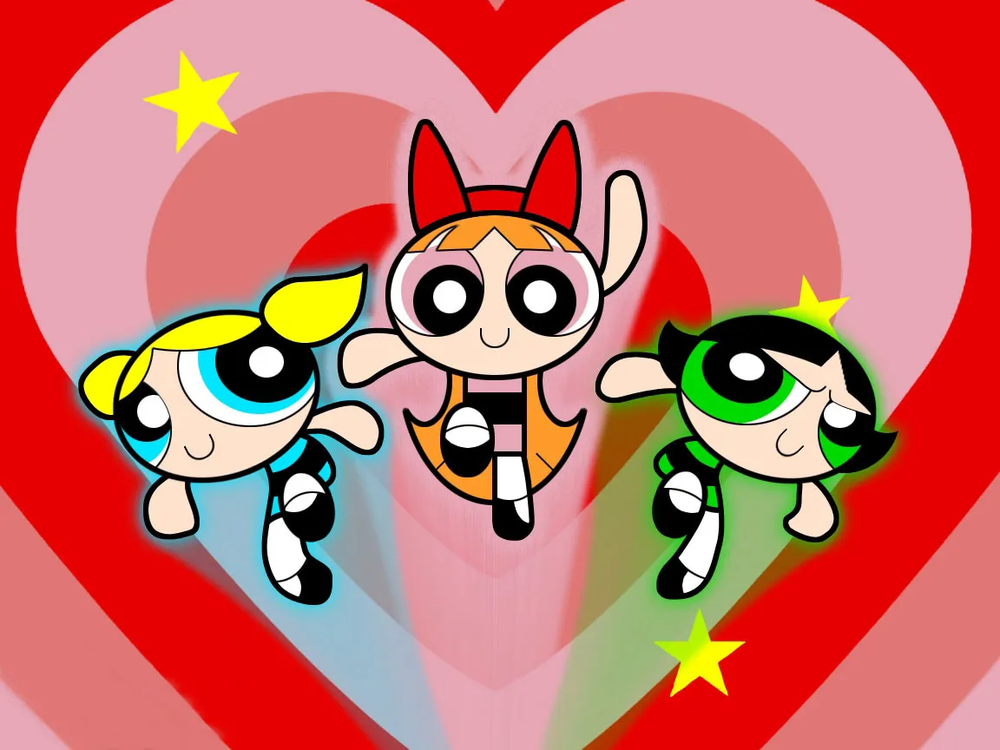

Magical Decoctions
Ever felt a burning problem that you wanted to solve, yet after seeking help all that you found was disappointment. "These can be found only in your dreams," they said. So, here we at Magical Decoctions are here to make these 'dreams' a reality. And what better way to solve these problems than some potions? We will teach you to make them on your own.
"[Potions] teach you how to bewitch the mind and ensnare the senses. I can tell you how to bottle fame, brew glory, and even put a stopper in death." - certain bat-human hybrid and master potion-maker.
So, here are some hand picked potions with distinctive mystical properties, making them unique in their own fields:
Powerpuff Brew

Are you tired of performing household chores? Do you feel that the work your boss gives you is more suitable for mindless drone than you? Ever need to execute a task, but felt too bored to? Don't worry, here I am presenting to you the Powerpuff Brew. With this potion, you can make your own slaves to carry out your commands!
Elixir of life

We all wish for a long living life. But what if...? Danger never comes with forewarning. So, just to have an edge on life, it is a necessity to have a means for resurrection. Nicolas Flamel has it, and now you can too! Try the Elixir of Life, and show death a Uno Reverse Card.
Miracle Invoker Potion

Remember your childhood, when you felt you could accomplish anything? After growing up, did you resent the reality? After watching Aladdin did you salivate on the thought of having to yourself Jasmine ahem The Magical Lamp? After drinking the Miracle Invoker Potion, you mill be able to invoke miracles and make your wishes true.